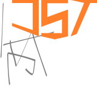

Jacob Trock
Your friendly neighborhood coder.
I'm Jacob Trock, a graduate of Northeastern University, with a degree in computer science and in business, and am currently the founding engineer at osmosis. In my free time, I enjoy helping people recover old tapes, improve their health, and fix their electronics.
No graphical user interface on a simulation can ever compete with the human imagination – Ken Thompson
Feel free to reach out. I enjoy a good conversation.